ECのミカタ
https://ecnomikata.com
ネットショップ運営を支援するビジネスポータル「ECのミカタ」。手間をかけずに、貴社ネット通販事業の収益性・業務効率性を高めるヒントを手に入れることが出来ます。
フィード
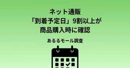
ネット通販「到着予定日」9割以上が商品購入時に確認 あるるモール調査
ECのミカタ
株式会社システムリサーチが運営する「創作品モールあるる」（以下、あるるモール）は2026年9月19日、「ネット通販の到着予定日」と「ネット通販での送料無料ライン」に関するアンケート調査の結果を発表した。本記事では、両調査の一部内容を抜粋して紹介する。
1日前
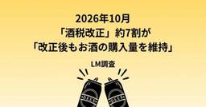
2026年10月「酒税改正」、約7割が「改正後もお酒の購入量を維持」 LM調査
ECのミカタ
株式会社ロイヤリティマーケティング（以下、LM）は2026年9月28日、「酒税改正に関する調査」の結果を発表した。
1日前
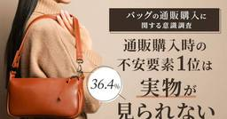
オンラインでのバッグ購入経験、「ある」が6割以上 NEXER調査
ECのミカタ
株式会社NEXER Groupは2026年9月24日、バッグの通販（オンライン購入）利用実態に関する調査の結果を発表した。
2日前
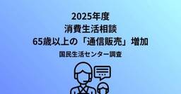
2025年度消費生活相談、65歳以上の「通信販売」増加 国民生活センター調査
ECのミカタ
独立行政法人国民生活センターは2026年9月16日、「2025年度 65歳以上の消費生活相談の状況」をまとめて発表した。本記事ではEC事業者に関連する「通信販売」「定期購入」などの項目に注目して紹介する。
2日前
売上前年比170％・営業利益210％を実現！ 「結わえる」は楽天市場の【値引きの罠】をどう抜け出したのか
ECのミカタ
楽天市場をはじめとするECモールでは、セールやクーポン、広告投資が売上拡大の定石として語られやすい。一方で、原価高騰や広告費・送料負担が重くなるなか、「売上は上がっているのに利益が残らない」という課題を抱える店舗も少なくない。本稿では、寝かせ玄米を中心とした食品ブランドを展開する株式会社結わえるの事例をもとに、楽天市場で陥りがちな「値引きの罠」から抜け出す店舗設計を紹介する。売上前年比170％、営業利益210％を実現した背景にあった、単なる割引率の調整ではなく、商品設計・オファー設計・データ活用を一体で見直す取り組みとは？※本記事は2026年6月開催「ECのミカタ カンファレンス」で行われた株式会社結わえる 金山竜一氏と、同社のEC運営を支援する株式会社ワンプルーフ 井野泰佑氏のセッションをレポートしたものです
2日前
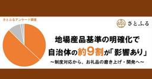
「地場産品基準の明確化」に対して約半数の事業者はポジティブな変化を期待 さとふる調査
ECのミカタ
株式会社さとふるは2026年9月24日、10月から施行されるふるさと納税「地場産品基準の明確化（※）」に関するアンケート調査の結果を発表した。※客観的に「どの地域で価値が生じたか」を判定するため、付加価値の算出方法は価格に基づく方式に原則として統一される。製造・加工品などについては、製造者が「価値の過半が区域内で生じたこと」を証明することが必須となり、自治体はその証明事項を一覧で公表したうえでお礼品の提供を開始するなど、運用の透明性が求められる。
2日前
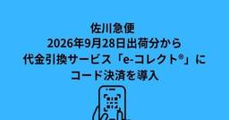
佐川急便、2026年9月28日出荷分から代金引換サービス「e-コレクト®」にコード決済を導入
ECのミカタ
佐川急便株式会社は2026年9月25日、9月28日出荷分より、代金引換サービス「e-コレクト」のクレジットカード決済を利用する顧客を対象に、クレジットカード決済の付帯サービスとしてコード決済の利用が可能になることを発表した。
2日前
Yahoo!ショッピングが「YouTube ショッピング アフィリエイト プログラム」と連携
ECのミカタ
LINEヤフー株式会社が運営する「Yahoo!ショッピング」は2026年9月25日、Googleが提供する「YouTube ショッピング アフィリエイト プログラム」と連携。YouTubeクリエイターが「Yahoo!ショッピング」で販売されている商品を、動画で紹介できる取り組みを開始することを発表した。
3日前
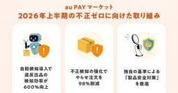
auコマース&ライフ、AI活用により「出品審査の検知効率」600%向上
ECのミカタ
auコマース&ライフ株式会社は2026年9月24日、「au PAY マーケット」において、安心・安全への取り組みと実績をまとめた2026年上半期（1月～6月）の「安心・安全への取り組みレポート」を公開した。
3日前
Amazon、「プライム感謝祭」開催 2026年10月16日から10月19日まで
ECのミカタ
Amazonは2026年9月24日、Amazonプライム会員限定のセール「プライム感謝祭」を、10月16日〜10月19日までの4日間にわたり開催することを発表した。
3日前
ショッピージャパン、2026年「9.9 Mega Day」日本ブランドへの注文数が前年比2倍超
ECのミカタ
ショッピージャパン株式会社は2026年9月24日、9月9日に実施した「9.9 Mega Day」における東南アジアの主要市場での実績を発表した。
3日前
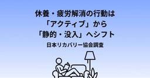
休養・疲労解消の行動は「アクティブ」から「静的・没入」へシフト 日本リカバリー協会調査
ECのミカタ
一般社団法人日本リカバリー協会は2026年9月24日、「休養・抗疲労（疲労解消）行動の実施率」を2025年、2024年、2023年と比較分析し、最新トレンドをまとめた結果を発表した。
3日前
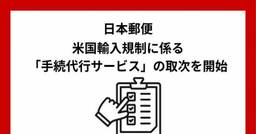
日本郵便、米国輸入規制に係る「手続代行サービス」の取次を開始
ECのミカタ
日本郵便株式会社は2026年9月18日、米国への輸入に必要となる各種手続きについて、アラウンド・ザ・ワールド株式会社（以下、ATW）が提供する米国輸入規制に係る登録・申請などの手続代行サービスの取次を、10月9日から開始すると発表した。
4日前
ジグザグ、海外カスタマー向け「医薬部外品」の配送、取り扱い開始
ECのミカタ
株式会社ジグザグは2026年9月17日、越境EC支援サービス「WorldShopping BIZ」および海外カスタマー向け購入代行サービス「WorldShopping」において、同年5月から医薬部外品の取り扱いを開始したことを発表した。
4日前
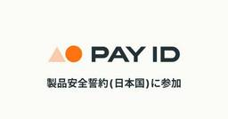
BASE「製品安全誓約（日本国）」に参加 「PAY ID」利用者に向け安全性向上
ECのミカタ
BASE株式会社は2026年9月17日、消費者庁をはじめとする関係省庁とオンラインマーケットプレイス運営事業者が協働して取り組む「製品安全誓約（日本国）」への参加を発表した。
4日前
Amazon、「検索ボックス」「商品ページ」からふるさと納税を申し込める機能を追加
ECのミカタ
Amazonは2026年9月17日、普段の買い物と同じ方法で、ふるさと納税の返礼品を検索・申し込みできる新機能を追加した。
4日前
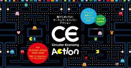
経済産業省「サーキュラーエコノミーアクションWeek」開催 10月1日〜10月7日で実施
ECのミカタ
経済産業省は2026年9月17日、サーキュラーエコノミー（循環経済）の認知拡大及び実践促進を目的に10月1日から10月7日までの期間、「サーキュラーエコノミー（CE）アクションWeek」を開催することを発表した。
4日前
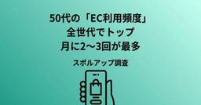
50代の「EC利用頻度」全世代でトップ、月に2〜3回が最多 スポルアップ調査
ECのミカタ
株式会社スポルアップは2026年9月17日、「『50代のEC利用実態』に関する調査2026」の結果を発表した。
5日前
イーザッカマニアストアーズ、公式オンラインストア「本店」を9月17日にオープン
ECのミカタ
株式会社ズーティーが運営するレディースアパレルEC「イーザッカマニアストアーズ」は2026年9月17日、2025年4月の旧運営会社の破産に伴う公式オンラインストアの閉鎖から約1年半を経て、自社EC「本店」をオープンした。
5日前